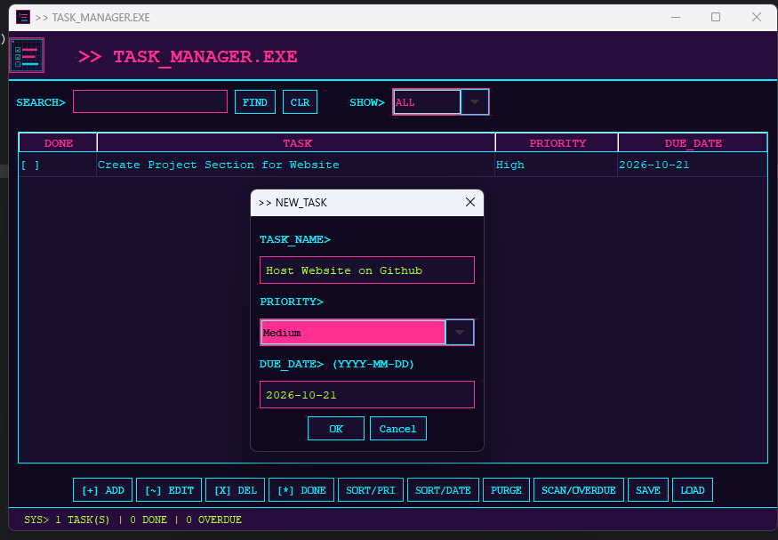
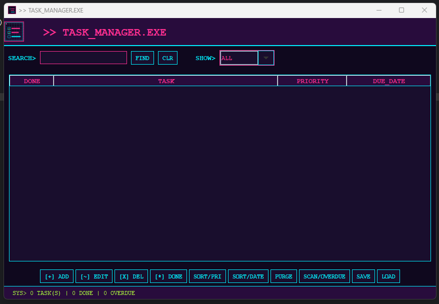
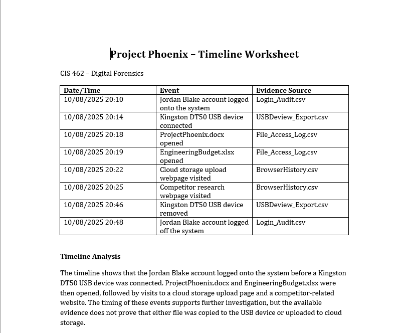
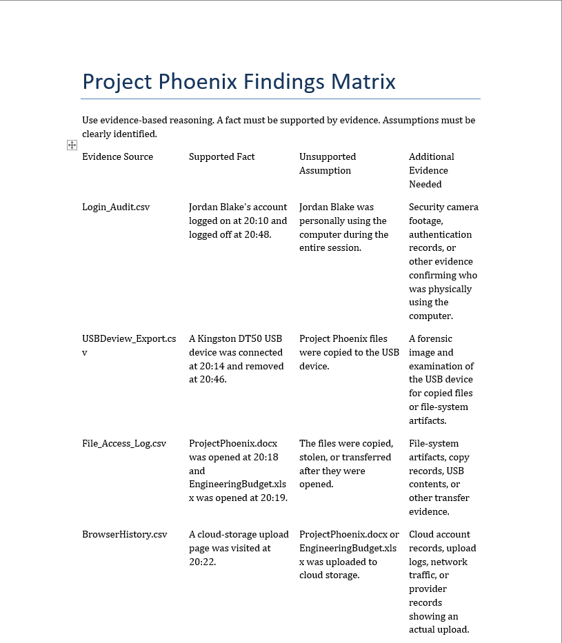
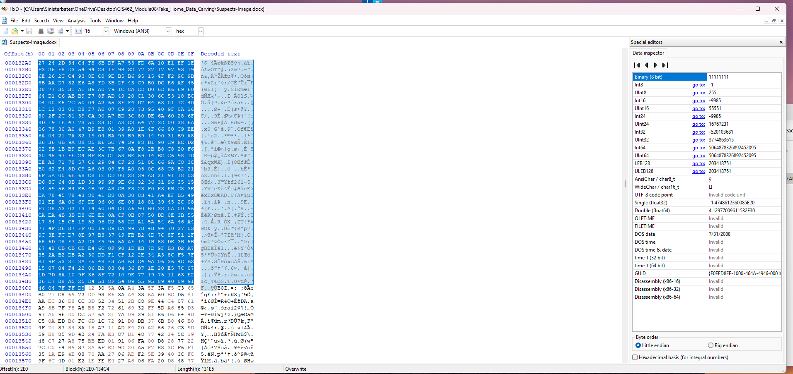
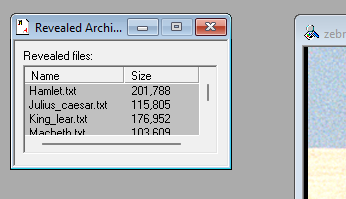
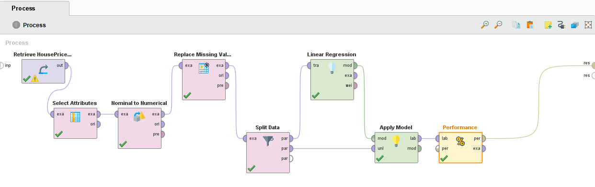

Projects & Technical Experience
This page highlights selected software development projects, cybersecurity investigations, and hands-on technical labs completed during my Computer Information Systems studies with a cybersecurity emphasis. Featured projects demonstrate software development and machine learning, while academic labs show practical digital forensics techniques.
Featured Projects
CIS 490 Cyber Defense Machine Learning System
This project involved developing and evaluating machine learning models to support cybersecurity analysis and defense. The project explored how artificial intelligence can be used to analyze vulnerability data and assist with identifying potential security risks.
I worked with six machine learning models and examined how their results could be used to support cybersecurity decision-making. This project provided experience with data analysis, model evaluation, and the application of machine learning in cybersecurity.
Java Task Management Application
I developed a desktop task management application using Java and the Swing graphical user interface framework. The application features a custom retro terminal-inspired design and allows users to organize tasks by priority, due date, and completion status.
I implemented features to add, edit, delete, search, filter, and sort tasks. The application also highlights overdue tasks and uses file input and output to save and load task data. This project helped me practice object-oriented programming, event handling, and user interface development.
Technologies: Java, Java Swing, Eclipse IDE, ArrayList, and File I/O.


Personal Cybersecurity Portfolio Website
I designed and developed this multi-page portfolio website using HTML5 and CSS to present my cybersecurity experience, technical skills, projects, and resume.
The site includes responsive layouts tested on desktop, tablet, and mobile screens, along with project screenshots and links to GitHub repositories. This website is an ongoing software development and professional presentation project.
Cybersecurity & Digital Forensics
Project Phoenix Digital Forensics Investigation
In this CIS 462 simulated investigation, I analyzed login records, file access logs, USB connection history, browser activity, document metadata, and SHA-256 hash information related to suspected unauthorized access.
I reconstructed an event timeline and documented supported findings separately from assumptions. The evidence warranted further investigation but did not establish that confidential files had been copied or uploaded.


Digital Forensics & Incident Investigation Labs
Selected CIS 462 academic labs involving forensic imaging, virtual machines, file carving, and steganography. These were guided classroom exercises rather than independent investigations.
Windows 11 VMware Forensics Lab
Created and configured a Windows 11 virtual machine using VMware, installed VMware Tools, and practiced USB write-protection procedures in a controlled lab environment.
FTK Imager Evidence Acquisition
Practiced forensic evidence acquisition using RAW and E01 formats, hash verification with MD5 and SHA-1, and chain-of-custody documentation.
Manual Data Carving with HxD
Identified JPEG header and footer signatures in hexadecimal data, carved the embedded bytes into a new file, and verified that the recovered image opened successfully.

Steganography Investigation with S-Tools
Used S-Tools with the supplied passphrase and IDEA setting to reveal hidden text files in a BMP image, then compared the altered and original images.

Programming & Data Analytics
RapidMiner Machine Learning Projects
I used RapidMiner to develop and evaluate machine learning models through hands-on data analysis projects. These exercises involved preparing datasets, selecting attributes, and interpreting model performance.
For a customer churn analysis, I created a Decision Tree model to identify patterns associated with customer behavior and potential churn.
In a separate house-price prediction exercise, I developed a Linear Regression workflow involving missing-value handling, data splitting, model training, and performance evaluation.

Related Cybersecurity Resources
The following resources provide information about cybersecurity standards, threats, and security practices.